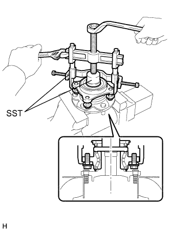
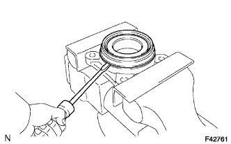

FRONT AXLE HUB > DISASSEMBLY |
| 1. REMOVE FRONT AXLE WITH ABS ROTOR BEARING ASSEMBLY LH |
|  |
Gently fix the front axle hub in a vise between aluminum plates.
Using SST, remove the bearing.
| 2. REMOVE FRONT AXLE HUB OIL SEAL LH |
|  |
Using a screwdriver, remove the front axle hub oil seal.